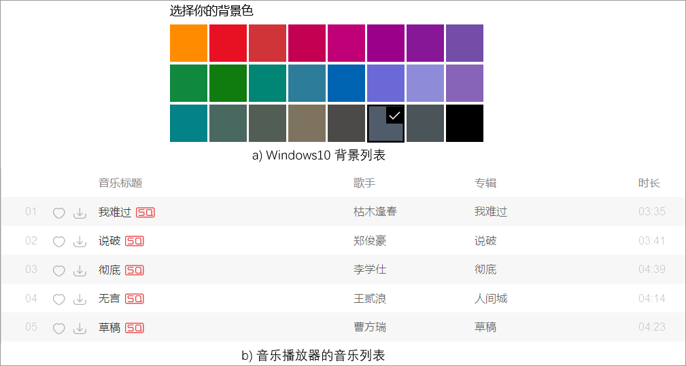
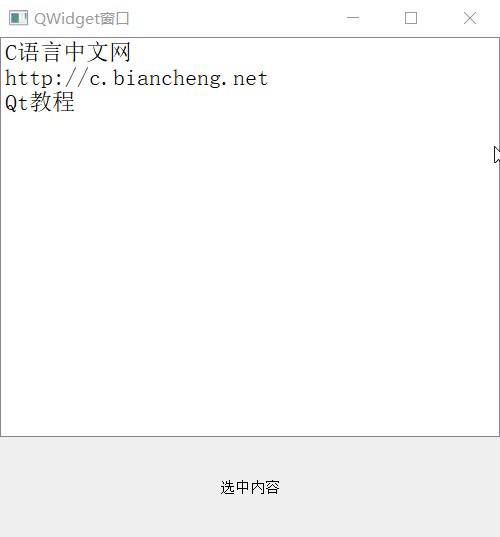

首页 > 编程笔记
Qt QListWidget列表框用法详解
很多应用程序中需要以列表的形式向用户展示数据（资源），比如 Windows 操作系统会以列表的方式展示很多张桌面背景图（如图 1a) 所示），再比如很多音乐播放器中以列表的形式展示音乐资源，用户可以选择自己喜欢的音乐（如图 1b) 所示）。
使用 Qt 框架开发 GUI 程序，如果需要以列表的方法展示数据，可以优先考虑用 QListWidget 类实现。
通过实例化 QListWidget 类，可以很轻松地创建一个列表。QListWidget 类只提供了 1 个构造函数：
语法层面上分析，可以不为 QListWidget 列表指定父窗口，那么它将作为一个独立的窗口。但实际开发中，通常会为 QListWidget 列表指定一个父窗口（例如 QWidget 窗口），它将作为父窗口中的一个子控件，和窗口中的其它控件一起搭配使用。
默认情况下，QListWidget 中每个列表项独自占用一行，每个列表项中可以包含文字、图标等内容。实际开发中，我们还可以将指定的窗口或者控件放置到列表项中显示，例如 QWidget 窗口、QLabel 文本框、QPushButton 按钮、QLineEdit 输入框等。
借助 QListWidgetItem 类，可以轻松管理 QListWidget 中的每个列表项，包括：
当然，QListWidgetItem 类还提供有很多其它的成员方法，这里不再一一罗列。
下表给大家罗列了一些 QListWidget 类常用的属性和方法：
下表给大家罗列了一些常用的信号和槽函数：
程序的运行结果为：
通过运行动画可以看到，我们将 QListMidget 和自定义的 QMyLabel 控件合理地分布在 QWidget 窗口上，通过为它们的信号和槽建立连接，使得当点击列表中的某个列表项时，文本框可以显示列表项中的文本内容。

图 1 常见的列表窗口
图 1 常见的列表窗口
使用 Qt 框架开发 GUI 程序，如果需要以列表的方法展示数据，可以优先考虑用 QListWidget 类实现。
QListWidget列表框的创建
QListWidget 是 Qt 提供的控件类，专门用来创建列表。QListWidget 类的继承关系如下：QListWidget -> QListView -> QAbstractItemView -> QAbstractScrollArea -> QFrame -> QWidget
这里着重介绍一下 QListView 类，它也可以用来创建列表。对于初学者来说，我强烈建议先学习 QListWidget，它是“简易版”的 QListView，创建和使用列表的方式更简单、门槛更低，对初学者更友好。当然，QListWidget 只能创建结构简单的列表，如果要制作复杂的列表，应优先考虑 QListView，因为它的功能更强大，很多 QListWidget 难以实现的功能，QListView 都能实现。通过实例化 QListWidget 类，可以很轻松地创建一个列表。QListWidget 类只提供了 1 个构造函数：
QListWidget(QWidget *parent = Q_NULLPTR)parent 参数用来指定新建列表的父窗口，该参数的默认值是 Q_NULLPTR，表示新建控件没有父窗口。
语法层面上分析，可以不为 QListWidget 列表指定父窗口，那么它将作为一个独立的窗口。但实际开发中，通常会为 QListWidget 列表指定一个父窗口（例如 QWidget 窗口），它将作为父窗口中的一个子控件，和窗口中的其它控件一起搭配使用。
QListWidgetItem列表项
QListWidget 列表控件可以显示多份数据，每份数据习惯称为列表项（简称项），每个列表项都是 QListWidgetItem 类的实例对象。也就是说，QListWidget 中有多少个列表项，就有多少个 QListWidgetItem 类对象。默认情况下，QListWidget 中每个列表项独自占用一行，每个列表项中可以包含文字、图标等内容。实际开发中，我们还可以将指定的窗口或者控件放置到列表项中显示，例如 QWidget 窗口、QLabel 文本框、QPushButton 按钮、QLineEdit 输入框等。
借助 QListWidgetItem 类，可以轻松管理 QListWidget 中的每个列表项，包括：
- 借助 QListWidgetItemo 类提供的 setIcon()、setText() 等方法，可以轻松地指定每个列表项要包含的内容；
- 借助 QListWidgetItemo 类提供的 setFont()、setBackground() 等方法，可以轻松地设置每个列表项的外观（文字大小、列表项背景等）。
当然，QListWidgetItem 类还提供有很多其它的成员方法，这里不再一一罗列。
QListWidget列表框的使用
对于刚刚创建好的 QListWidget 类对象，不包含任何 QListWidgetItem 类对象，就是一个空列表。借助 QListWidget 类以及父类提供的属性和方法，我们可以对新建列表执行多种操作。下表给大家罗列了一些 QListWidget 类常用的属性和方法：
| 属性名或方法名 | 功 能（含 义） |
|---|---|
| count 属性 |
保存当前列表中含有的列表项的总数。 该属性的值可以通过 count() 方法获取。 |
| currentRow 属性 |
保存当前选择的列表项所在的行数。 该属性的值可以通过 currentRow() 方法获取，也可以通过 setCurrentRow(int row) 方法修改当前选择的列表项。 |
| sortingEnabled 属性 |
决定当前 QlistWidget 列表是否开发排序功能，默认值为 false，即不开启排序功能。 该属性的是可以通过 isSortingEnabled() 方法获取，可以通过 setSortingEnabled(bool enable) 方法进行修改。 |
| SelectionMode 属性 |
指明当前列表中是否可以同时选择多个列表项，或者是否只能连续选择多个列表项。 该属性是枚举类型，可选值有 5 个：
该属性的值可以通过 selectionMode() 方法获取，也可以通过 setSelectionMode(QAbstractItemView::SelectionMode mode) 方法进行修改。 |
| ViewMode 属性 |
指定 QListWidget 是按行显示数据（如图 1b) ），还是分列显示数据（如图 1a) ）。 该属性是枚举类型，可选值有 2 个：
该属性的值可以通过 viewMode() 方法获取，也可以通过 setViewMode(ViewMode mode) 方法进行修改。 |
|
void addItem ( const QString & label ) void addItem ( QListWidgetItem * item ) void addItems ( const QStringList & labels ) |
向 QListWidget 列表的尾部添加指定项，可以是一个文本（label）、一个列表项（item），还可以一次性添加多个文本（labels）。 |
| void QListWidget::setItemWidget(QListWidgetItem *item, QWidget *widget) | 将指定的 widget 窗口添加到 item 列表项中。 |
| currentItem() | 返回当前选中的列表项。 |
| removeItemWidget(QListWidgetItem *item) | 删除指定的 item 列表项。 |
| sortItems(Qt::SortOrder order = Qt::AscendingOrder) | 默认将所有列表项按照升序排序，通过指定参数为 Qt::DescendingOrder，可以进行降序排序。 |
| takeItem(int row) | 返回位于 row 行的列表项。 |
| selectedItems() | 返回当前被选择的所有列表项。 |
QListWidget列表框的信号和槽
对于给定的 QlistWidget 列表，用户可以选中其中的一个或者某些列表项，甚至还可以修改列表项中的内容。QListWidget 类具有很多信号和槽信息，可以捕捉用户的很多动作，还可以针对用户的动作做出适当地响应。下表给大家罗列了一些常用的信号和槽函数：
| 信号函数 | 功 能 |
|---|---|
| itemClicked(QListWidgetItem *item) | 用户点击某个列表项时会触发此信号函数，item 参数指的就是被用户点击的列表项。 |
| itemDoubleClicked(QListWidgetItem *item) | 用户双击某个列表项时会触发此信号函数，item 参数指的就是被用户双击的列表项。 |
| itemPressed(QListWidgetItem *item) | 鼠标按下某个列表项时会触发此信号函数，item 参数指的就是被鼠标按下的列表项， |
| itemSelectionChanged() | 当选择的列表项发生变化时会触发此信号函数。 |
| currentItemChanged(QListWidgetItem *current, QListWidgetItem *previous) | 当前列表项发生变化时会触发此信号函数，current 参数指的是新选择的列表项；previous 参数指的是先前选择的列表项。 |
| 槽函数 | 功 能 |
| clear() | 删除列表中的所有列表项。 |
| scrollToItem(const QListWidgetItem *item, QAbstractItemView::ScrollHint hint = EnsureVisible) | 用 hint 参数指定的滑动方式，让用户看到指定的 item 列表项。 |
| selectAll() | 选择所有的列表项。 |
|
scrollToBottom() scrollToTop() |
分别将列表滑动到底部和顶部。 |
实例演示QListWidget列表框的用法
接下来，我们亲自制作一个 QListWidget 列表：
//main.cpp
#include <QApplication>
#include <QWidget>
#include <QListWidget>
#include <QLabel>
#include <QListWidgetItem>
using namespace std;
class QMyLabel:public QLabel{
Q_OBJECT
public slots:
void rsetText(QListWidgetItem *item);
};
void QMyLabel::rsetText(QListWidgetItem *item){
this->setText(item->text());
}
int main(int argc, char *argv[])
{
QApplication a(argc, argv);
//创建一个窗口，作为输入框的父窗口
QWidget widget;
//设置窗口的标题
widget.setWindowTitle("QWidget窗口");
widget.resize(500,500);
QListWidget listWidget(&widget);
listWidget.resize(500,400);
listWidget.setFont(QFont("宋体",14));
listWidget.addItem("C语言中文网");
listWidget.addItem("http://c.biancheng.net");
listWidget.addItem(new QListWidgetItem("Qt教程"));
QMyLabel print;
print.setText("选中内容");
print.setParent(&widget);
print.resize(500,100);
print.move(0,400);
print.setAlignment(Qt::AlignCenter);
QObject::connect(&listWidget,&QListWidget::itemClicked,&print,&QMyLabel::rsetText);
widget.show();
return a.exec();
}
//QMyLabel类的定义应该放到 .h 文件中，本例中将其写到 main.cpp 中，程序最后需要添加 #include "当前源文件名.moc" 语句，否则无法通过编译。
#include "main.moc"
程序中，我们自定义了一个 QMyLabel 类，它继承自 QLabel 文本框类，因此 QMyLabel 也是一个文本框类。在 QMyLabel 类中，我们自定义了一个 rsetText() 槽函数。程序的运行结果为：

图 2 QListMidget 控件实际应用
图 2 QListMidget 控件实际应用
通过运行动画可以看到，我们将 QListMidget 和自定义的 QMyLabel 控件合理地分布在 QWidget 窗口上，通过为它们的信号和槽建立连接，使得当点击列表中的某个列表项时，文本框可以显示列表项中的文本内容。
关注公众号「站长严长生」，在手机上阅读所有教程，随时随地都能学习。内含一款搜索神器，免费下载全网书籍和视频。

微信扫码关注公众号